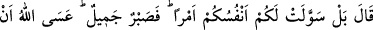
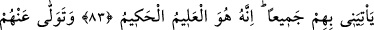
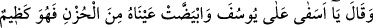
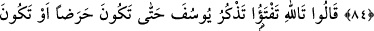
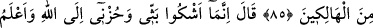
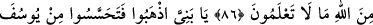
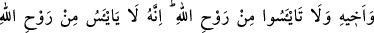
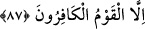

SABR-I CEMİL
83. “(Yâkub) dedi ki: “Hayır, aksine nefisleriniz size (böyle) bir işi süsledi. Artık
bana düşen güzelce sabretmektir. Umulur ki Allah onların hepsini bana getirir.
Çünkü O, çok iyi bilendir, hikmet sâhibidir.”
84. Yüzünü onlardan çevirdi, “Ah Yûsuf’um ah.” diye sızlandı ve üzüntüden
gözleri ağardı. Artık yutkunuyor da yutkunuyordu.”
85. (Oğulları:) “Allah’a andolsun ki sen hâlâ Yûsuf’u anıyorsun. Sonunda ya
hasta olacaksın ya da büsbütün helâk olacaksın!” dediler.
86. (Yâkub:) Ben üzüntü ve kederimi sadece Allah’a arz ediyorum. Ve ben sizin
bilemeyeceğiniz şeyleri Allah tarafından (vahiy ile) biliyorum.” dedi.
87. Ey oğullarım! Gidin de Yûsuf’u ve kardeşini iyice araştırın. Allah’ın
rahmetinden ümit kesmeyin. Çünkü kâfirler topluluğundan başkası Allah’ın
rahmetinden ümit kesmez.
Oğulları yanına dönüp büyüklerinin kendilerine söylediği şekilde konuşunca babaları
Yâkub “dedi ki: “Hayır, aksine” Bu söz, oğullarının sözünün ihtivâ ettiği Bünyamin’in
başına gelenlere sebebiyet verenin kendileri olmadığı, bu duruma sürükleyen söz ve
davranışların kendilerinden sâdır olmadığı iddiâsını reddetmektedir. Sanki şöyle demiş
oluyor: İş hiç de sizin anlattığınız gibi değil, bilakis “nefisleriniz size” isteyip de
yaptığınız böyle “bir işi süsledi” onu size kolaylaştırdı.
Bu iş, “Hırsızın cezâsı alıkonulup köle yapılmasıdır.” şeklindeki verdiğiniz fetvâdır.
Yoksa kral hırsızın alıkonulup köle yapılacağını nereden bilecekti?! Çünkü böyle bir
cezâ, kralın dininden değil Yâkub (a.s.)’ın dinindendir. Sizin fetvânız olmasa ve ona
öğretmeseydiniz kral böyle bir hüküm vermeyecekti!